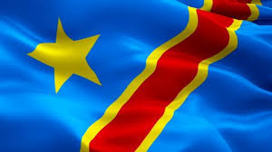

Jonathan KOLA MONGENGO
About me
My name is Jonathan KOLA MONGENGO, I was born in Democratic Republic of Congo and currently live in Kinshasa with sommeone of my family. I studied petrochemitry at the University of Kinshasa and now I'm more interested in the field of computer science, specifically in software design and development. My goal is to find a point of intersection between petrochemistry, the field I studied, and computer science because today we are in the digital age and computer solutions are involved in almost all areas of everyday life, and petrochemistry is no exception.
Kinshasa, Democratic Republic of Congo

Kinshasa is the capital and largest city of the Democratic Republic of Congo and one of the populate city of Africa. It is located in the West on the bank of the majestic Congo River, the second most powerful river in the world after the Amazon. The Democratic Republic of Congo, the second largest in Africa by area, has around 100 million inhabitants and shares borders with nine neighboring countries. The country is located in the heart of Africa and is crossed by the equator, allowing it to be situated both in the northern and southern hemispheres. The country is home to the endemic species of Okapi in its wildlife and a large natural flora reserve, thus holding one of the most important forest reserves in the world. The country is rich in mineral resources such as copper, cobalt, coltan, tin, tungsten, etc. Additionally, it has a river basin that allows it to hold up to 10% of the world's freshwater reserves. Apart from its mineral, forest, and petroleum wealth, the country has cultural diversity with more than 450 tribes and peoples.